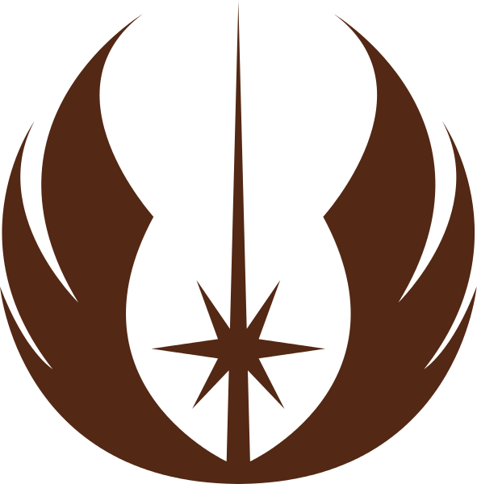

Bienvenidos a la página de personajes de la Wookipedia. En esta página podréis encontrar información acerca de los personajes, de su historia y de los rasgos que los definen. Empecemos.
La información está clasificada en dos grandes grupos: Jedis, Siths o Miscelánea según a qué facción pertenezcan los diferentes personajes. 
-
Anakin Skywalker
Apariciones
I, II, III, IV, V, VI, VII Especie
Humano Planeta Natal
Tatooine Filiación
Orden Jedi y Orden Sith Primera aparición
Cuando el Jedi, Qui-Gon Jinn y sus aliados se quedan tirados en Tatooine y precisan piezas de recambio para su nave, Anakin Skywalker, un joven esclavo, se esfuerza por ayudarlos. Se inscribe en una carrera de vainas , con la esperanza de ganar el dinero para comprar las piezas que necesita; sin que el niño lo sepa, Qui-Gon hace una apuesta con el dueño de Anakin (Watto). Cuando Anakin gana, no solo derrota al campeón Sebulba, sino que también gana su libertad. Más tarde se convertirá en el aprendiz del Jedi Obi-Wan Kenobi.
Hijo vengativo
Como aprendiz de Jedi, Anakin sabe que la venganza no es para los Jedi. Sin embargo, cuando localiza a su madre en un campamento de banbidos tusken en Tatooine, los masacra sin piedad. Destrozado por la muerte de su madre, promete que se convertirá en el Jedi más poderoso de todos... y que aprenderá a impedir que las personas mueran.
Amor Secreto
Aunque Anakin es consciente de de que la Orden Jedi les prohíbe enamorarse porque emociones tan fuertes pueden llevar al lado oscuro, es incapaz de esconder su amor por Padmé Amidala. Padmé intenta resistirse por su propia carrera política pero acaba reconociendo su amor por Anakin.
Atraído hacia el lado oscuro
El canciller supremo Palpatine siente el gran interés por la trayectoria de Anakin como Jedi, por lo que Anakin lo considera un valioso amigo. Anakin incluso le confía su oscuro secreto: la matanza de los tusken de Tatooine. Sin embargo, durante las Guerras Clon, Anakin se entera de que Palpatine y el Consejo Jedi no confían el uno en el otro, y se debate entre la lealtad a Palpatine y sus obligaciones hacia el Consejo. Cuando Anakin llega a saber que Palpatine es un lord Sith, informa al Consejo, pero se alía con el ya que le promete llegar a alcanzar poderes para alargar su vida.
Conversión en Darth Vader
Anakin se convierte en Darth Vader, aprendiz de Sith de Palpatine, y ayuda a destruir a los enemigos de los Sith para que Palpatine se proclame emperador. Pero Anakin queda desmembrado tras un duelo con Obi-Wan Kenobi. Entonces, Palpatine recupera sus restos y lo transforma en un ciborg. Es imposible reparar sus pulmones dañados, por lo que Vader deberá llevar siempre un casco y una armadura presurizada con sistemas de soporte vital, como un kit de respiración asistida, un sintetizador de voz y potentes extremidades ortopédicas. Durante los años venideros, el emperador casi no sale de su palacio en Coruscant, y Vader se convierte en la imagen del imperio.

Duelos de la Muerte
En la Estrella de la Muerte I, Vader se enfrenta a Obi-Wan después de casi dos décadas. Más tarde, Vader se entera de la existencia de su hijo, Luke Skywalker, e intenta atraerlo al lado oscuro cuando se conocen en la Ciudad de las Nubes. No consigue su lealtad, por lo que ayuda al emperador a tender una trampa a Luke y sus rebeldes aliados en la segunda Estrella de la Muerte que estaba en órbita alrededor de Endor. Pero cuando el emperador ataca a Luke, Vader se da cuenta de que debe destruir al lord Sith y finalmente se redime de todos sus actos como lord oscuro y vuelve al lado luminoso de la fuerza.